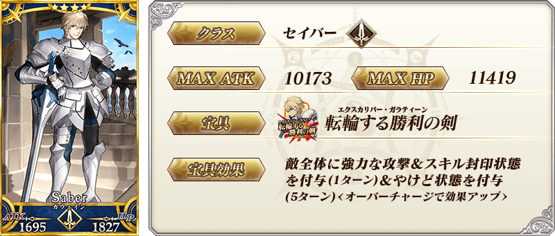
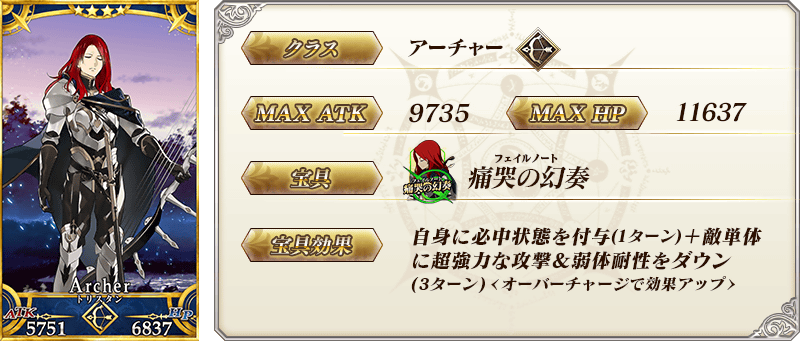
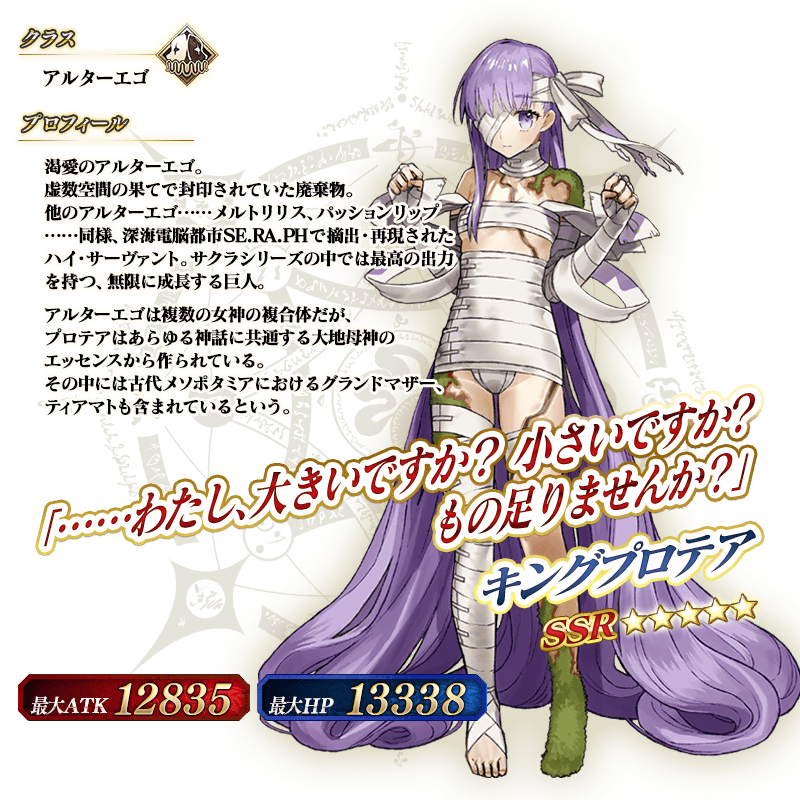

◆「帝王花Pick Up召喚(每日交替)」期間◆
期間:2019年2月27日(三) 17:00～3月13日(三) 11:59
舉辦期間限定「帝王花Pick Up召喚(每日交替)」！
※未通過終局特異點的狀態也能進行「帝王花Pick Up召喚(每日交替)」。
自特別活動「復刻版:深海電腦樂土 SE.RA.PH -Second Ballet-」登場的Servant「★5(SSR)帝王花」以期間限定新登場！
本次包含上述Pick Up 3位的Servant！
「★4(SR)高文」「★4(SR)崔斯坦」以每日交替Pick Up！
「★5(SSR)帝王花」常駐Pick Up。
詳情請在聖晶石召喚畫面左下的召喚詳細確認。
「★5(SSR)我ら征くは星の大海」「★4(SR)月の海の生徒会」「★3(R)ザ・ケージ」做為期間限定概念禮裝登場！！
裝備上述3種的概念禮裝的話，在特別活動「復刻版:深海電腦樂土 SE.RA.PH -Second Ballet-」中會提升活動敵人的追加出現率。
◆有關Servant的注意◆
※帝王花在Pick Up期間結束後不會追加到故事召喚。
※請注意「帝王花Pick Up召喚(每日交替)」做為每日交替，高文、崔斯坦就算Pick Up期間中也會有不被抽出的日子。
※高文、崔斯坦在Pick Up期間結束後仍會在故事召喚被抽出。
※Pick Up期間中，高文、崔斯坦就算通過各章前也能入手。
◆有關概念禮裝的注意◆ ※ザ・ケージ在Pick Up期間中，也能靠友情點數召喚獲得。 ※請注意自友情點數召喚抽出的ザ・ケージ在自動變還設定登錄★3(R)概念禮裝的情況，會變成自動變還的對象。
Pick Up期間中，期間限定Servant、Pick Up Servant、期間限定概念禮裝的出現機率提升！
10次召喚中確定1張★4(SR)以上和確定1位★3(R)以上的Servant！
※確定★4(SR)以上包含Servant和概念禮裝。
※本頁面皆為開發中圖片。會有與實際圖片相異的情況。
| 每日交替Pick Up期間 | 每日交替Pick Up內容 |
|---|---|
| 2月27日(三) 17:00～ 3月1日(五) 22:59 |
帝王花 高文 崔斯坦 |
| 3月1日(五) 23:00～ 3月3日(日) 22:59 |
帝王花 高文 |
| 3月3日(日) 23:00～ 3月5日(二) 22:59 |
帝王花 崔斯坦 |
| 3月5日(二) 23:00～ 3月7日(四) 22:59 |
帝王花 高文 崔斯坦 |
| 3月7日(四)23:00～ 3月9日(六) 22:59 |
帝王花 高文 |
| 3月9日(六) 23:00～ 3月11日(一) 22:59 |
帝王花 崔斯坦 |
| 3月11日(一) 23:00～ 3月13日(三) 11:59 |
帝王花 高文 崔斯坦 |
※請注意會以每日交替變更Pick Up的Servant。




※上述「★4(SR)崔斯坦」的卡面為靈基再臨第2階段。


|
★★★★★SSR |

|
★★★★SR |

|
★★★R |

現在舉辦中的特別活動「復刻版:深海電腦樂土 SE.RA.PH -Second Ballet-」中，享受追加劇本的繞路關卡做為新要素開放。
由於帝王花也會在此關卡登場，無論如何請挑戰看看！
◆活動舉辦期間◆
2019年2月20日(三) 17:00～3月6日(三) 11:59
※繞路關卡預定日後在達文西工房的「稀有稜鏡交換」追加。

介紹帝王花的寶具演出！
另外，在「Fate/Grand Order」官方網站內的公告中，公開了「★5(SSR)帝王花」的寶具演出。敬請確認。
介紹高文、崔斯坦的寶具演出！
另外，在「Fate/Grand Order」官方網站內的公告中，公開了「★4(SR)高文」「★4(SR)崔斯坦」的寶具演出。敬請確認。
關於期間限定「復刻 Fate/EXTRA CCC特別活動Pick Up召喚(每日交替)」的詳情，請自下述橫幅確認。

【3月4日(一) 17:00圖片更新】